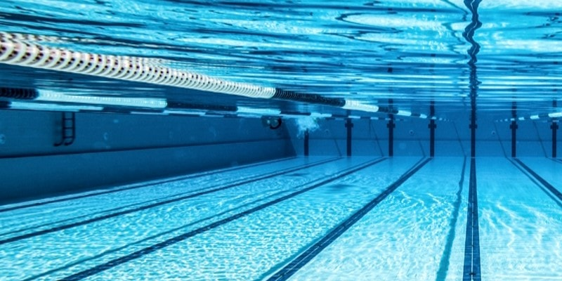

Sund
Ég hef haft áhuga á sundi síðan ég var 7 ára gamall.
Sund getur verið skemtileg íþrótt ef þú ert góður að sinda eða ert yfir 50 ára gammal.
það er auðvitað alltaf einhver sem er hvorki góður né 50+ sem hefur gaman af sundi en það eru ekki margir.
Ég er núna að verða búinn að æfa fyrir SH (Sundfélag Hafnafjarðar) í tæpa 4 mánuði
en á undan því var ég að æfa fyrir sundfélagið óðinn (það er sundfélagið á Akureyri).
Í sundi er kept í 4 mismunandi sundum á 18 mismunandi vegu í 25m laug og 17 í 50m laug,
svo er líka kept í boðsundi sem virkar svipað og boðhlaup nema er í vatni og það er ekki pefli sem synt er með.

Efst á síðu